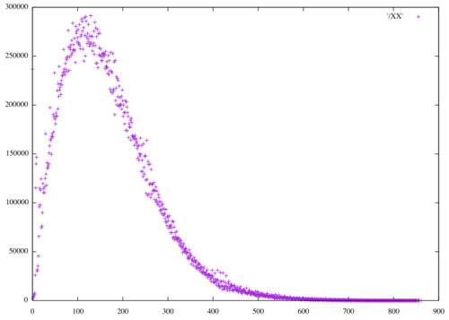
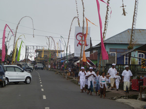

Phobrain
Image Analysis
Here are some results for various image analysis methods applied
to Bill's and Elle's photos combined (N~8000).
Values are scaled for display purposes.
Distributions of image distance metrics
Lab CIE94 color distances
The multiple curves seem like artifacts of computation, possibly evidence of a bug in the code, or an oddity of the algorithm..
Lab CIE2000 color distances
This algorithm seems more stable. Code is twice as complex.

Hue+Sat 12x12 histogram distance distribution
Hue+Sat 24x24 histogram distance distribution
Hue+Sat 48x48 histogram distance distribution
Sift distance distribution (500 words)
HOG distance distribution (500 words)
SURF Fast distance distribution (500 words)
SURF Fast distance distribution (200 words)
Dimensionality of metrics
Calculate the 'dimension' of the picture space using different metrics.
Where run time is not indicated, the metric calculation was part of calculating
on 8k photos. In this case, the feature sets that words are drawn from are richer, and this seems to raise the fractal dimension slightly.
FracD is fractal dimension (Higuchi) calculated on both an arbitrary ordering of the pairs, and sorted ordering of the values, for each metric.
'Dimension' is calculated by
MultiDimensional Scaling using an heuristic; stress(100) is the
'stress' that the scikit-learn library reported for fitting the set of
distances to 100 dimensions, while stress(1) is the stress for fitting
to one dimension.
NOTE: the distances for these metrics violate the triangle inequality
in ~0.02% of cases, so it would be impossible for these metrics to map
to cartesian spaces. Using the square root of the distance overcomes
this violation, leaving higher-order violations to be checked.
In this case, the dimension of Lab distance goes from 3 to 25.
Photo dimensions are within 300x300px, except when 600px stated.
| Method | Sample | t_calc | FracD arb |
FracD sort |
Nonmetric stress at dim=N-1 |
Dimension | Metric stress at dim=N-1 |
stress(100) | stress(1) |
|---|---|---|---|---|---|---|---|---|---|
| Lab CIE94 dist 600px | 329 | - | 1.9785 | 1.1458 | 0.324275 | 3 | 2114108156246633 | 2114107376961504 | 33238672000252052 |
| Lab CIE94 dist 600px | 328 | - | 1.9785 | 1.1461 | 0.293298 | 3 | 210243371374 | 210242809607 | 2765715192305 |
| Lab CIE2000 dist 600px | 328 | - | 1.9830 | 1.1515 | 0.273917 | 3 | 191237885055 | 191237885050 | 2453706756652 |
| Greyscale | 329 | 10s | 1.9825 | 1.0490 | 0.325703 | 8 | 42238947558 | 42238951082 | 1454262245593 |
| Greyscale 600px | 329 | 10s | 1.9834 | 1.0512 | 0.323473 | 9 | 43218312117 | 43218311843 | 1503467825297 |
| HueSat 12x12 | 329 | 10s | 1.9858 | 1.0889 | 0.322799 | 19 | 33661688784 | 33661589105 | 3616806311396 |
| HueSat 24x24 | 329 | 10s | 1.9880 | 1.1298 | 0.322510 | 35 | 16070401684 | 16070009781 | 4349496176228 |
| HS 24x24 600px | 329 | 10s | 1.9899 | 1.1340 | 0.322085 | 35 | 15928051546 | 15927668148 | 4368059624646 |
| HueSat 48x48 | 329 | 12s | 1.9908 | 1.1854 | 0.322677 | 64 | 7221313089 | 7231079366 | 4836919775090 |
| HS 48x48 600px | 329 | 12s | 1.9915 | 1.1880 | 0.323621 | 63 | 7336043115 | 7344975790 | 4820454342678 |
| GIST | 329 | 1m | 1.9865 | 1.2312 | 0.329024 | 9 | 28786833694 | 28786830336 | 997666139720 |
| GIST | 830 | 3m | 1.9961 | 1.2448 | - | 9 | 214365075676 | 214364981166 | 7007650454678 |
| HOG 250 words | 329 | 10m | 1.9708 | 1.3114 | 0.332430 | 10 | 10120766077 | 10120761644 | 150327274044 |
| HOG 250 words | 830 | 30m | 1.9812 | 1.3547 | - | 10 | 90102389041 | 90102297910 | 1309506765055 |
| HOG 500 words | 329 | 20m | 1.9667 | 1.3543 | 0.329802 | 13 | 4740817637 | 4740814068 | 70999988871 |
| HOG 500 words | 830 | 53m | 1.9820 | 1.3913 | - | 13 | 47615466238 | 47615344807 | 638873446770 |
| HOG 1k words | 329 | 46m | 1.9684 | 1.3805 | 0.333557 | 15 | 2364987049 | 2364984044 | 38619752999 |
| HOG 1k words | 329 | - | 1.9687 | 1.3961 | 0.326129 | 16 | 1738122757 | 1738119626 | 32056067485 |
| HOG 4k words | 329 | 183m | 1.9667 | 1.4563 | 0.330588 | 22 | 789797143 | 790448483 | 12788342999 |
| SIFT 500 words | 329 | - | 1.9526 | 1.5254 | 0.334410 | 10 | 3299647152 | 3299613921 | 32981778348 |
| SIFT 1k words | 329 | - | 1.9520 | 1.5706 | 0.325208 | 11 | 1930309620 | 1930289338 | 18095265606 |
| SIFT 4k words | 329 | 828m | 1.9645 | 1.5659 | 0.370531 | 12 | 1173320138 | 1173417298 | 8332093153 |
| SURF FAST 200 words | 329 | - | 1.9728 | 1.3829 | 0.331700 | 8 | 2778256609 | 2778256463 | 40011821579 |
| SURF FAST 250 words | 329 | 8m | 1.9735 | 1.3754 | 0.333224 | 8 | 2591205654 | 2591204993 | 35829689692 |
| SURF FAST 500 words | 329 | 15m | 1.9649 | 1.4551 | 0.335407 | 10 | 1620836377 | 1620830296 | 21609765416 |
| SURF FAST 1k words | 329 | 30m | 1.9637 | 1.5023 | 0.332962 | 14 | 949563200 | 949543059 | 13039001089 |
| SURF FAST 4k words | 329 | 117m | 1.9731 | 1.5536 | 0.352633 | 19 | 627742238 | 628714256 | 6008901502 |
| SURF FAST 4k words | 329 | - | 1.9776 | 1.5690 | 0.355562 | 19 | 581727967 | 582893432 | 5016304129 |
Violations of triangle inequality
Sample of 329 photos with '11' in sequence number ('*'=328); 300x300px unless noted.
| Method | N_violations | N_vio/N_triangles | Avg_vio | Avg_dist | Avg_vio / Avg_dist |
|---|---|---|---|---|---|
| Lab CIE94 | 186402 | 0.031986 | 157120.407286 | 795782.437570 | 0.197441 |
| Lab CIE94* | 182355 | 0.031581 | 1590.681204 | 7932.971405 | 0.200515 |
| Lab CIE2000* | 488398 | 0.084582 | 2832.189859 | 7549.811582 | 0.375134 |
| Greyscale | 126902 | 0.021776 | 1323.551315 | 5036.899585 | 0.262771 |
| Grey 600px | 120566 | 0.020689 | 1339.299040 | 5106.055953 | 0.262296 |
| Gist | 69269 | 0.011886 | 1252.289855 | 4240.768117 | 0.295298 |
| RGB 12 | 25323 | 0.004345 | 791.203886 | 7305.977862 | 0.108295 |
| RGB 24 | 7398 | 0.001269 | 525.981752 | 8538.276549 | 0.061603 |
| RGB 32 | 5404 | 0.000927 | 446.044597 | 8827.910112 | 0.050527 |
| RGB 48 | 5026 | 0.000862 | 640.310784 | 9095.378790 | 0.070400 |
| RGB 64 | 3994 | 0.000685 | 614.752879 | 9270.282684 | 0.066314 |
| RGB 98 | 3451 | 0.000592 | 576.815995 | 9409.094095 | 0.061304 |
| RGB 128 | 1923 | 0.000330 | 531.054082 | 9549.109033 | 0.055613 |
| RGB 12 600px | 25190 | 0.004323 | 790.258158 | 7313.379003 | 0.108057 |
| RGB 24 600px | 7531 | 0.001292 | 526.027221 | 8560.853557 | 0.061446 |
| RGB 32 600px | 5463 | 0.000937 | 449.759107 | 8847.079639 | 0.050837 |
| RGB 48 600px | 5327 | 0.000914 | 645.766473 | 9106.240103 | 0.070915 |
| RGB 64 600px | 4382 | 0.000752 | 634.000685 | 9272.151040 | 0.068377 |
| RGB 128 600px | 2156 | 0.000370 | 544.644712 | 9515.696642 | 0.057236 |
| HS 12 | 7882 | 0.001353 | 950.321873 | 7555.464323 | 0.125779 |
| HS 24 | 1740 | 0.000299 | 900.577586 | 8227.559169 | 0.109459 |
| HS 48 | 1137 | 0.000195 | 661.389622 | 8653.085004 | 0.076434 |
| HS 64 | 1134 | 0.000195 | 697.298942 | 8776.086144 | 0.079454 |
| HS 12 600px | 6898 | 0.001184 | 943.319078 | 7564.309456 | 0.124707 |
| HS 24 600px | 1790 | 0.000307 | 908.031844 | 8237.927256 | 0.110226 |
| HS 48 600px | 1267 | 0.000217 | 693.607735 | 8647.060308 | 0.080213 |
| HS 64 600px | 1289 | 0.000221 | 682.567106 | 8761.325172 | 0.077907 |
| Sift 500w | 26466 | 0.004542 | 1267.833182 | 1073.692611 | 1.180816 |
| Sift 1k | 16489 | 0.002829 | 1598.830736 | 824.586293 | 1.938949 |
| Sift 4k | 10528 | 0.001807 | 1918.068294 | 533.492373 | 3.595306 |
| SurfFast 250w | 38162 | 0.006549 | 630.098999 | 1006.401837 | 0.626091 |
| SurfFast 500w | 19853 | 0.003407 | 901.724525 | 830.596690 | 1.085635 |
| SurfFast 1k | 10659 | 0.001829 | 1310.348063 | 648.191424 | 2.021545 |
| SurfFast 4k | 8988 | 0.001542 | 1488.200156 | 419.794008 | 3.545072 |
| Hog 250w | 53782 | 0.009229 | 675.056004 | 1968.357004 | 0.342954 |
| Hog 500w | 18680 | 0.003205 | 559.354979 | 1431.803914 | 0.390665 |
| Hog 1k | 9330 | 0.001601 | 771.307074 | 970.307130 | 0.794910 |
| Hog 4k | 5587 | 0.000959 | 993.062824 | 650.037429 | 1.527701 |
Comparing effect of number of words on triangle violations
| Method | 250w | 500w | 1k | 4k |
|---|---|---|---|---|
| Sift | - | 26466 | 16489 | 10528 |
| SurfFast | 38162 | 19853 | 10659 | 8988 |
| Hog | 53782 | 18680 | 9330 | 5587 |
Potential surfaces traveling 500 steps from given pictures
For each of two pictures, keep picking the best non-repeating match for each
algorithm, graphing the distance.
Then compare the overlap between methods in tables.
Starting photos
Lab CIE94
It seems that the value 1000 is a theme, as well as 0.
The numbers look suspect, though image matches seem to be plausible.
Overall, about 3/8 of the images are involved in 0-distance pairs,
which might be due to the limited range used of the wide Lab space.
Examples of photos with the most 0 distances are at the end of this page.
Total 722 unique photos for the two sequences.
HS 12x12
Very similar patterns.
Total 613 unique photos for the two sequences.
HS 24x24
Total 557 unique photos for the two sequences.
Gist
The graphs seem to match well, but
there is one point in the first graph, at x=300, y=4000,
that doesn't appear on the other graph, plus others.
Total 554 unique photos for the two sequences.
Sift 500 words
Total 598 unique photos for the two sequences.
Hog 500 words
Total 644 unique photos for the two sequences.

Surf 500 words
Total 625 unique photos for the two sequences.
Surf 200 words
Total 604 unique photos for the two sequences.
Overlapping pics seen for pairs of methods on one photo, sequences of 500
| Method 1 | Method 2 | Photo 1 | Photo 2 |
|---|---|---|---|
| Lab | HS12 | 56 | 47 |
| Lab | HS24 | 58 | 42 |
| HS12 | HS24 | 202 | 180 |
| Lab | Gist | 3 | 44 |
| Gist | Sift | 7 | 3 |
| Sift | Hog | 237 | 246 |
| Sift | Surf | 242 | 284 |
| Hog | Surf | 187 | 205 |
| Surf 500 words | Surf 200 words | 248 | 262 |
| HS24 | Hog | 27 | 16 |
| Gist | Hog | 5 | 1 |
Total pics seen for 500 x [Sift, Hog, Surf] with 500 words on one photo
where max = 1500
| Photo 1 | Photo 2 |
|---|---|
| 968 | 941 |
Some photos with the max number (12) of Lab CIE94 color distances = 0

Information density
| Source | Average (bytes/pixel * 100) | N |
|---|---|---|
| Scanned slides | 49 | 11737 |
| Misc 1 | 40 | 1512 |
| Canon A95 | 29 | 1510 |
| Misc 2 | 36 | 219 |
| Canon 20D | 42 | 2523 |
| Misc 3 | 70 | 3379 |
Distributions
Scanned slides
Misc 1
Canon A95
Misc 2
Canon 20D
Misc 3
Software
Lab conversion and distance from formulae on web.
Hue+Sat histograms, Sift, Hog, Surf from BoofCV, Sift/Hog/Surf using a KNN classifier.
Gist distance from OpenIMAJ.
Fractal analysis from IQM.
MultiDimensional Scaling from scikit-learn.
What use to cry for Capricorn? it sails
Across the heart's red atlas: it is found
Only within the ribs, where all the tails
The tempest has are whisking it around.
— Mervyn Peake, Titus Alone